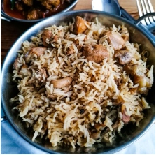

My Favourite Meal

Chicken Pilau Rice
Pilau rice is a rice dish which originated from India and is a meal of togetherness and celebration that you often found at celebrations such as weddings, Christmas, birthdays or simply family get-togethers in Eastern Africa.


| Ingredients | |
|---|---|
| 500g Basmati rice. | 5 small onions. | 800g chicken cut in pieces. | 2 tsp whole cumin seeds. | 2 tsp whole coriander seeds. | 20 whole cloves. | 3 black cardamoms. | 2 bay leaves. | 3 black cardamoms. | 2 bay leaves. | 2-inches cinnamon stick. | 1 ½ tsp whole black pepper. | 4 cloves of garlic, peeled. | 1-inch ginger, peeled. | 1 ½ tsp salt. | 1 litre water. | ¼ cup oil. |
Instructions
- Wash and rinse the rice. Then soak it in plenty of water. Set aside.
- Peel the onions and chop 4 of them. In a cooking pan or a stock pot heat the oil and fry the chopped onions with the whole cumin seeds and whole coriander seeds.
- When the onions become translucent, add in the cloves, cardamoms, black pepper, garlic, ginger, bay leaves, and cinnamon. Cook further until the onions turn golden brown.
- Then add the salt, the remaining whole onion and the chicken pieces. Give a stir and let the poultry cook until it turns opaque in colour.
- Pour the water in the chicken, let it boil and simmer at low heat. It takes me an hour to make the stock.
- By now, the rice will have expanded a little bit and turned white opaque in colour. Drain the rice. Set aside.
- Sieve the stock into a large cooking pan and discard the ginger, garlic, bay leaves, and all the whole spices. Carefully pick the chicken pieces and put them back into the stock.
- Let the stock boil again. Once it gets to the boiling point, put the rice in it and cook at moderate-high heat until all the water evaporates. Take care throughout the process by stirring the rice every now and then. But make sure not to break the grains.
- Cover the pan lid with a tea towel and put it on the pan. Turn the heat down and further cook at low heat until the steam comes out.